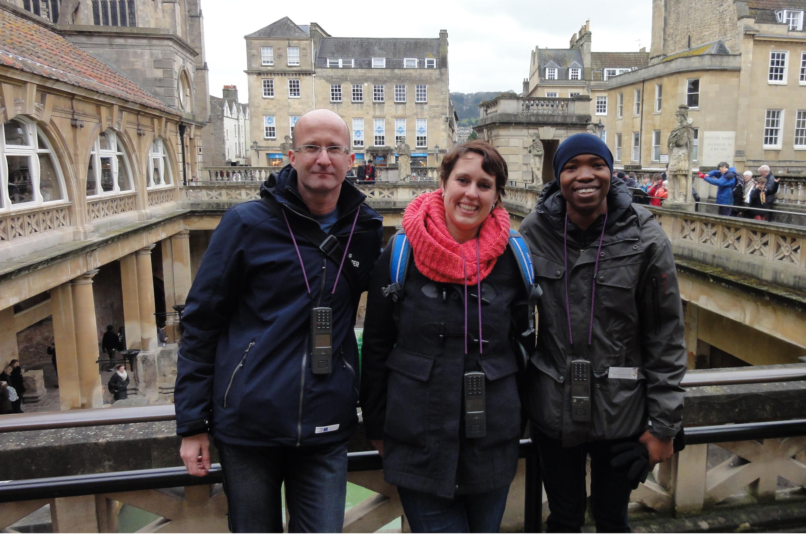
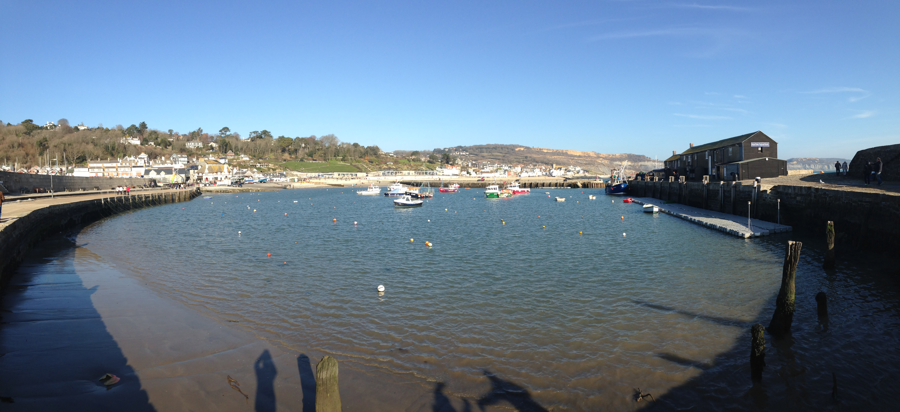
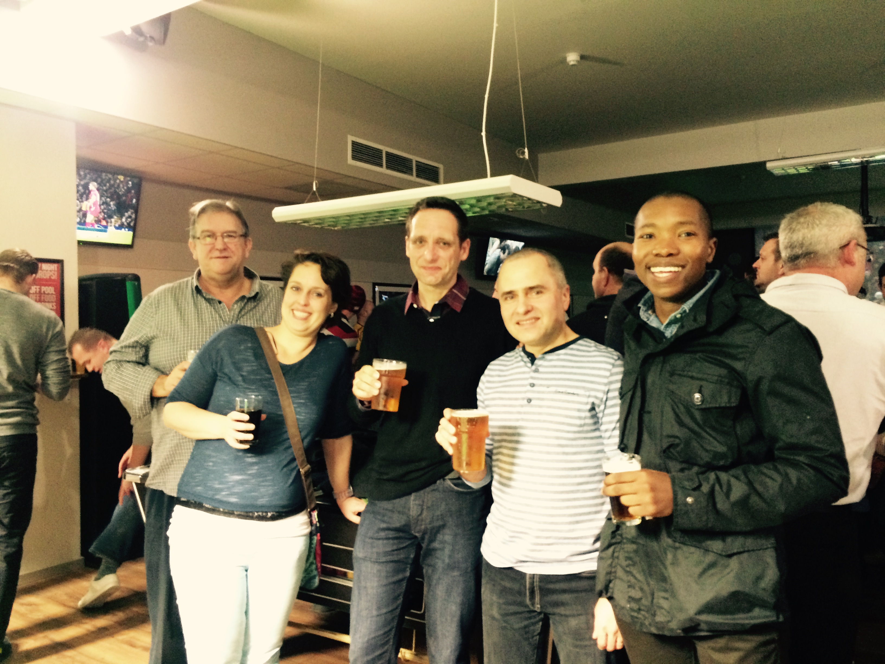
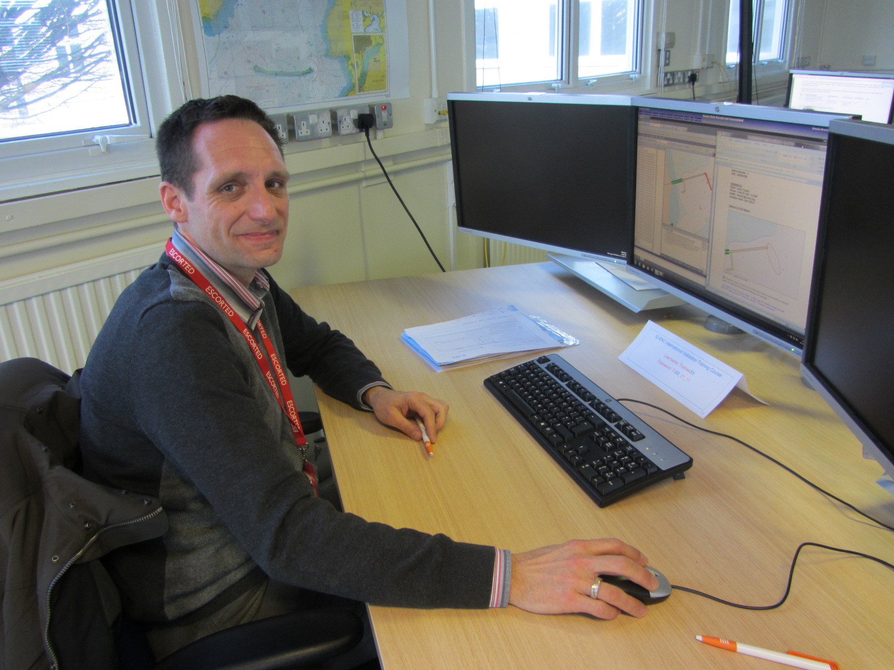
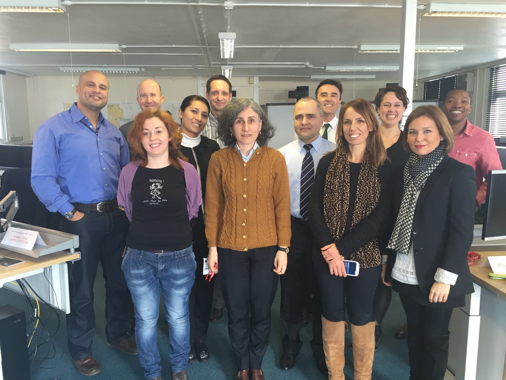

2015
11/03
March
It's been a busy month down here in IC-ENC. In addition to hosting our first training course of 2015, we have also had a sharp rise in the amount of incoming data which has kept the validation team occupied (to say the least!), as well as several meetings and visits.
Following on from the first week of the training course, the delegates spent the weekend exploring the local area. On Saturday, a few of the delegates spent the day in Bath, and on Sunday, IC-ENC organised a day trip down to Lyme Regis, a small seaside town on the South coast of England. Luckily it was a lovely sunny day (the past few days it had been pouring with rain!), so the delegates were able to make the most of it. We also organised a couple of evenings during the two week period for the team and the delegates to relax and enjoy a friendly drink together.

×

Matija, Martien and Mlungisi enjoying a tour around the Roman Baths, Bath

×

A sunny day spent at Lyme Regis, Dorset

×

Mike, Course Instructor, and a few of the delegates enjoying a casual drink together
Some of the topics covered in the second week included data consistency, where the delegates were able to discuss their views on the use of SCAMIN and the problems associated with overlapping data in detail, as well as the distribution of data where the delegates learnt about S-63 (Data Protection Scheme) and the route to the market place via the IC-ENC VARs. In addition, the delegates had the opportunity to get hands on with the Transas ECDIS, helping them to put some of their learning into practice.

×

Peter getting to grips with one of the practical exercises
The next course is scheduled to take place from 25th May to 5th June, and will be held at the Australian Hydrographic Office (AHS), located in Wollongong, Australia. Invitations for the delegates selected to attend this course will be sent out very shortly.
On a final note, we hope that those of you who attended our first training course enjoyed it as much as we enjoyed hosting it!

×

Team photo of the training course delegates
On the data front, we are pleased to announce that the first 17 Philippines cells sent to IC-ENC were released to the market place for distribution by our VARs on 27th February 2015. As of week 10, this addition brings our total number of issued ENCs to 5,500!
Richard Fowle, IC-ENC Technical Manager, attended the Joint TSMAD29 and DIPWG7 meeting which was held in Ottawa, Canada from 2nd-6th February. The meeting was well attended by both Hydrographic Offices and Industries. Individual reports were given to the meeting group regarding the activities of other IHO Working Groups and organisations, and as a result there were some good discussions surrounding the topics of S-58, S-100 and S-101. Some of the main outcomes of the meeting were the further developments regarding S-101, and the restructuring of TSMAD and DIPWG, which have now been replaced by the S- 100WG and ENCWG. If you are interested in finding out more about the Joint TSMAD29 and DIPWG7 meeting, the minutes will be available on the IHB website in the near future. In addition, more information on the new S-100WG and ENCWG can be found on the IHO website.
James attended the 6th RSAHC meeting in Abu Dhabi, which took place from 9th- 11th February. James presented on IC-ENC services, with a particular focus on capacity building and our first training course of 2015. The presentation was well received, and some interesting questions were asked. Additionally, James met several new contacts from our existing members Pakistan and Bahrain, and continued to develop IC-ENC's relationship with several prospective new members.
On 27th February, We had a visit from Commander Nickolás Roscher, Directorate of Hydrography and Navigation at the Brazilian HO (DHN). Nickolás spent the day with the team, learning about our core services and some of the main processes we perform on a daily basis. We believe that visits such as these provide a great opportunity to develop and strengthen our working relationships with one another.
James and Mathias have also just attended the 5th WENDWG meeting, which was held in Singapore from 3rd – 5th March. At the meeting, James presented a RENC progress report, based on the 2014 Annual Report, which was well received by the group and sparked some interesting discussions. The main topics of discussion included the issues surrounding overlapping data, and the method of assessing progress on delivering adequate ENC coverage to support the mandation of ECDIS, the IHO ENC catalogue, and the S-101 future standard. As a direct result of this meeting, IC-ENC will be collaborating with the Maritime and Port Authority of Singapore (MPA) in order to investigate the effects of overlapping ENCs on various types of ECDIS, including both behaviour and display of data.
Email a link